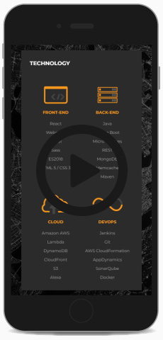
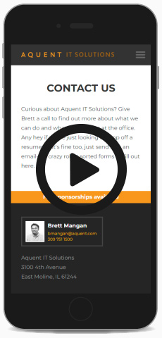

<!DOCTYPE html><html lang="en"><head><meta charset="UTF-8"/>
<meta name="viewport" content="width=device-width, initial-scale=1">
<meta http-equiv="X-UA-Compatible" content="IE=edge"/><title>Chris Norton: UX Portfolio</title><link href="https://fonts.googleapis.com/css?family=Open+Sans:300,600|Raleway:300,600" rel="stylesheet"/><link rel="stylesheet" href="styles/styles.css"/><script src="js/polyfill.min.js"></script></head></html><body><div class="header"><h1><span>Chris Norton</span><span>UX</span></h1></div><div class="main-content"><div class="project"><div class="project-tag"><div class="counter"></div><div class="title">Aquent IT Solutions Website</div></div><div class="section"><div class="flex-row"><div class="img-container"><div class="video-container"><video id="aquent-home" width="223" height="470" poster="video/aquent-home.jpg">
<source src="video/aquent-home.mp4" type="video/mp4">
</video></div><div class="video-container"><video id="aquent-contact" width="223" height="470" poster="video/aquent-contact.jpg">
<source src="video/aquent-contact.mp4" type="video/mp4">
</video></div></div><div></div></div></div></div><div class="project"><div class="project-tag"><div class="counter"></div><div class="title">Service Admin Portal</div></div><div class="section"><div class="flex-row"><div class="img-container"></div><div class="credits"><h5>Client</h5><p>John Deere</p><h5>My roles</h5><p>UX Design</p><h5>Platforms</h5><p>Desktop, Tablet</p><h3>Overview</h3><p>I led UX on John Deere&rsquo;s new Service Agreements Portal</p></div></div></div><div class="section"><div class="flex-row"><div class="img-container"></div><div><h3>Problem statement</h3><p>John Deere was looking to reduce the cost of maintenance by bringing duplicate silo apps under a singular technology solution and dev team. &nbsp;A unified application would allow better consistency and visibility between departments and quicker response throughout the overall workflow.</p><h3>Project goals</h3><ol><li>Combine various single-use applications under one central app.</li><li>Maintain current level of functionality</li><li>Provide a more intuitive user experience to multiple user roles</li><li>Catered experience to business owners, dealers, sales representatives, and service technicians</li><li>Make digital assets more re-usable and discoverable between departments</li></ol></div></div></div><div class="section"><div class="flex-row"><div class="img-container"></div><div><h3>Leveraging existing architecture</h3><p>Because there were a pre-existing internal websites being used to view agreements in various states already, the team decided to minimize usability issues and base the new site largely around what was already familiar and adopted by existing users. New features would include a speed boost by converting the experience to a single page app with and in building connections between assets that were previously isolated into the overall work-flow.</p><h4>A living style guide</h4><p>Visually, we were able to pull from a branded living style guide to define the look and feel of overall page and components to build out templates for rapid high-fidelity mockups.</p></div></div></div><div class="section"><div class="flex-row-icon"><div class="icon-ux icon-journey"></div><div><h3>Engaging users</h3><p>Using the project requirements document, email interviews, and phone calls we built out personas. &nbsp;Having personas allowed us to walk each user type through prioritizing and finding their most needed tasks.</p><div class="users"><div class="user"><div class="icon-ux icon-persona"></div><div><h4>Business owners and dealers</h4><p>Needed to be able to monitor overall profitability and admin</p></div></div><div class="user"><div class="icon-ux icon-persona"></div><div><h4>Sales representatives</h4><p>Needed the ability to quickly pull from existing template agreements, view existing agreements and work within bundled groups of agreements for customers.</p></div></div><div class="user"><div class="icon-ux icon-persona"></div><div><h4>Technicians</h4><p>Needed to be able to update the status of their job tickets on customer machines as services were performed. &nbsp;They also needed to be alerted to upcoming and past due tasks to be able to predict upcoming needs for staff workloads and ordering inventory.</p></div></div></div></div></div></div><div class="section"><div class="flex-row-icon"><div class="icon-ux icon-tree"></div><div><h3>UX research methods</h3><p>In-person workshop sessions were used to ensure updated tasks were available and intuitive for each user type to build a general consensus. &nbsp;In some cases, we found that users were using multiple tabs as a gap fix to not having the context of the data in front of them for either global or minute actions even in the existing apps. &nbsp;These areas offered us the chance to make the experience better by showcasing the missing data alongside the task. &nbsp;</p><h4>Card sorting</h4><p>To pin down navigation, users were asked to place task cards into groups that made the most sense to them. &nbsp;Consideration was also given to how frequently the user would need to access the task.</p><h4>Tree/Chalk-mark testing</h4><p>Users were presented with menu structures and asked where they would click to find areas of the site or next steps in the work-flow.</p><h4>Whiteboard/wireframe prototypes</h4><p>In some cases, multiple levels of user access complicated the approval structure of assets to the point where workflows had to be redefined. Low-fidelity prototypes allowed us to check in with users and make sure the task could still be completed. Complicated component work-flows were whiteboarded and moved into iterative digital wireframes prototypes. &nbsp;Having a digital wireframe allowed us to get more buy-in from users as well as start to check for usability issues.</p></div></div></div><div class="section"><div class="flex-row-icon"><div class="icon-ux icon-fix"></div><div><h3>Lessons learned</h3><p>One of the biggest challenges was introducing UX into an already established Agile-like development process. While we tried to map out major connections between sections ahead of development we ran into cases where the workflow dead-ended with the actual backend data available. Not an uncommon pain point, but some additional concept proofs for specific sections may have been helpful in preventing some of the data availability mismatches. &nbsp;Budgeting more time for iterations would have been more realistic. &nbsp;Overall though, allowing the users to have feedback early did make adoption very smooth as users were already familiar with how the new system would act.</p></div></div></div></div></div></body><script src="js/app.js"></script>